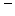
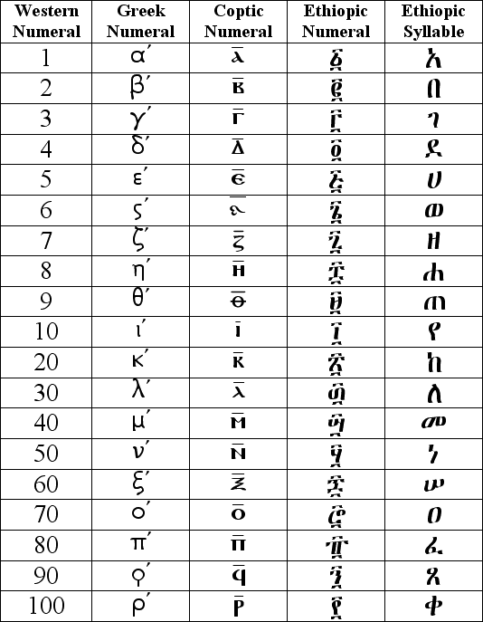
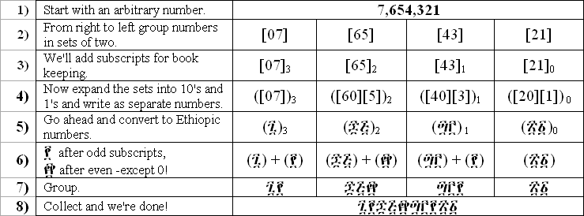
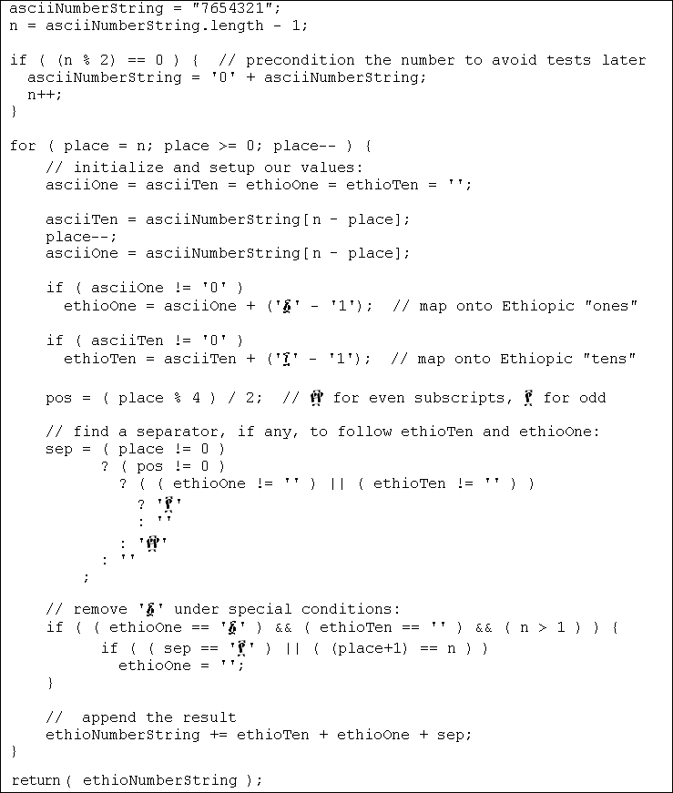

|
Ethiopic numerals have a familiar quality about them that seems to catch the eye and pique the imagination of the first-time viewer. In particular, the bars above and below the letter-like symbols appear reminiscent of their Roman counterparts. The symbols in between the bars, however, are clearly not of Roman origin. The shapes appear Ethiopic but only half seem to correspond to Ethiopic syllables and in an incomprehensible order. The mystery begins to unfold when we look at the lesser-known ancient Greek numeral system. The ancient Greeks used two numeral systems, in fact. The "Acrophonic" numeral system was used for weights and measures. The "Milesian" numeral system used universally and based on the lower case letters marked with a ' to indicate the numeric context. The Ethiopic numerals are said to have come from the interpretation of the Milesian system by Ethiopia's Nile brethren the Egyptian Copts. In the Coptic practice the preferred numeric modifier was a bar, , placed above their lower case letters. Coptic script borrowed heavily from the Greek uppercase alphabet. The Coptic lowercase characters are nearly indistinguishable from the upper and the bar in some practices is also used as a means to clearly mark an uppercase context. It is unclear if the Ethiopians borrowed the Coptic numerals outright or just the practice of using the alphabet to create a recordable counting system. Perhaps a little of both. It would be a difficult case to argue that ገ, ዐ, ጌ, ጊ, ሀ, ሣ, ሃ, ሮ, ን and የ. did not in some way influence the numerals ፫, ፬, ፮, ፯, ፱, ፵, ፶, ፸, ፺ and ፻. 
After 100 the Copts and Greeks went on define alphabetic letters as representing multiples of a hundred up to 900. The Ethiopians did this as well but ultimately did not introduce a new numeral glyph until 10,000, which is also when we see the last Greek entry. Rather, the Ethiopians chose to prefix ones and tens to 100 (e.g. 200 = ፪፻, 2,200 = ፳፪፻). None of the groups had a number for zero (the alphabet starts with the 1st letter) nor a thousand. Ilf, the final Ethiopic numeral, `፼', is often confused as the representation of 1,000. This is probably because it appears as the next logical order of 10 following 100, `፻', it is however ten thousand. As we shall soon see, orders of 100 are very important to Ethiopic number formatting, consider `፼' as the shorthand of `፻፻' (literally "one hundred one hundreds" or ፻ × ፻ = ፼ = 10,000). The syllable `ሺ', short for "thousand" in Amharic, is used as the numeral for 1,000 along side western numerals but rarely with Ethiopic. An interesting point to note is that the Copts and Greeks inserted archaic characters for the numbers 6 and 90. These adjustments helped create the "Omicron-Ayne Axis" at number 70 where the two circular glyphs curiously line up. It is all the more curious that in numerology tables (another subject!) using the Ge'ez syllabary in the Unicode like `ሀለሐ' ordering, Omicron and Ayne are the only two that remain aligned! While this may be no more than mere coincidence it is probable that Copts, Greeks and Ethiopians were making an effort to syncronize the numeric values assigned to letters with the equivalent letters and values used in the Hebrew ``Gematria'' practice. Thus transporting the practice to a limited extent. ConversionConversion from Ethiopic numerals into western form is trivial, going the other way, however, takes a little care. Somewhere in an ancient corner of forgotten mathematics lies a sleeping conversion formula in wait of reawakening. Deciding it was better to let sleeping formulas lie and not confront my limitations as a mathematician I found a relatively pain free means to convert long numbers. The key lies in understanding the mechanics of Ethiopic numeral sequences as groups of tens partitioned by orders of a hundred: We do need to add to our 8 easy steps the rule that "፩'s and 0's multiply with ፻". In the first case, ፩'s can not appear before an Ethiopic hundred (፻) when the value in the tens place is zero. Demonstrating the rule, suppose that our example number had the sequence "01" or "00" instead of "43". The reductions would have then followed as per: and Computationally, this "grouping by twos" method is probably not the most efficient approach, but it gets the job done. Pseudo code for the method is in our last table: 
|